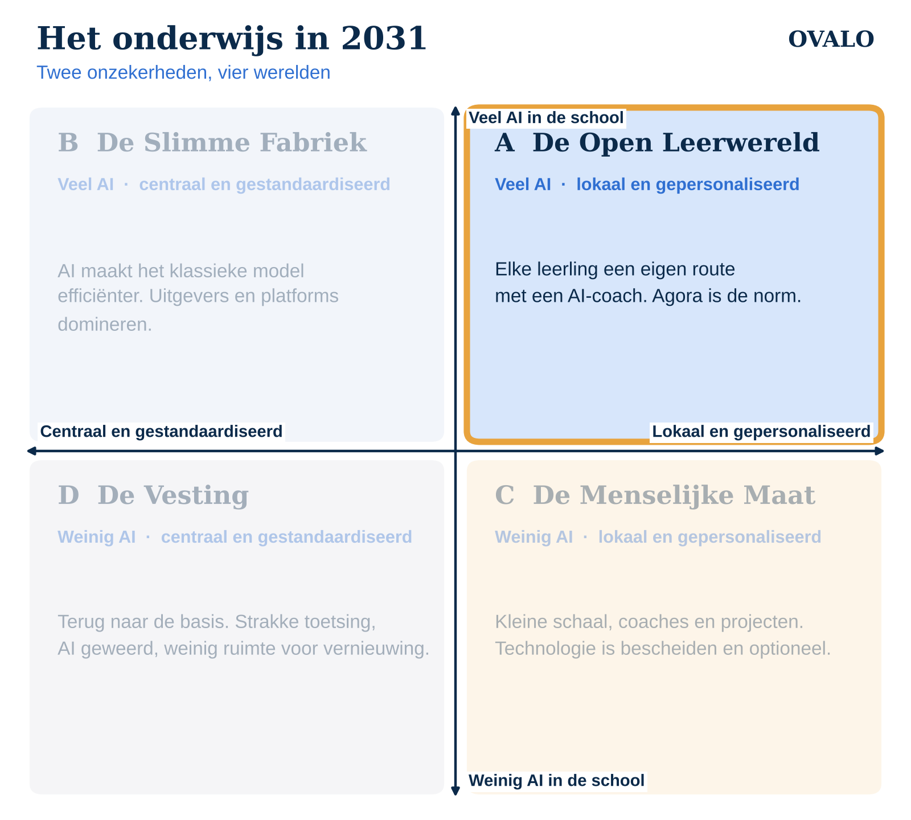

Dit is deel 2 van de reeks “Het onderwijs in 2031”. In het eerste artikel lees je hoe de vier scenario's tot stand komen. Dit scenario: veel AI in de school, en scholen en leerlingen die zelf bepalen hoe er geleerd wordt.

Een maandagochtend in 2031
Sara (14) begint haar week niet met een rooster, maar met een gesprek met haar coach. Ze werkt aan een project over waterbeheer in haar eigen wijk. Haar AI-leerassistent geeft geen antwoorden. Hij vraagt waarom ze denkt dat de dijk daar ligt, welke bronnen ze heeft gecheckt en welk kerndoel ze deze week wil aantonen.
Naast haar werkt een klasgenoot aan een bedrijfsplan, een ander aan een podcast. Wat ze delen, is een helder overzicht van wat ieder beheerst. De coach ziet in één oogopslag wie vastloopt en wie klaar is voor de volgende stap.
Hoe ziet deze wereld eruit?
- Projecten en leerdoelen staan centraal. Agora en vergelijkbare concepten zijn geen uitzondering meer maar een gewone keuze in het voortgezet onderwijs.
- De docent is coach. Minder klassikaal uitleggen, meer begeleiden, vragen stellen en verbinden.
- AI is een sparringpartner. Niet om werk over te nemen, maar om leerlingen te laten nadenken: uitleg op maat, feedback op een concept, een vraag terug in plaats van een antwoord.
- Bewijs van leren is breder. Portfolio's, presentaties en aangetoonde leerdoelen tellen net zo zwaar als toetsen. De inspectie kijkt naar leerwinst, niet alleen naar het cijfer.
Wat er te winnen valt
In deze wereld worden de grote beloften van vernieuwingsonderwijs werkelijkheid. Leerlingen die in het klassieke systeem vastliepen, krijgen ruimte. Motivatie stijgt, omdat leerlingen werken aan iets wat ze zelf belangrijk vinden. En de coach heeft eindelijk tijd voor wat het meest telt: het gesprek met de leerling.
Waar het mis kan gaan
- Overzicht kwijt. Als iedere leerling een eigen route heeft, wordt het snel onoverzichtelijk. Zonder goed zicht op voortgang raken leerlingen uit beeld.
- Afhankelijk van grote platforms. Grote techbedrijven bieden complete leeromgevingen aan, soms gratis. Handig, maar de school verliest grip op haar eigen data en didactiek.
- Ongelijkheid. Niet elke leerling kan even goed omgaan met vrijheid. Zonder structuur en begeleiding groeit de kloof.
- AI die te veel doet. Een assistent die het denkwerk overneemt, ondermijnt precies wat je wilt leren.
Wat kun je als school nu al doen?
- Maak leren zichtbaar. Zorg dat je kunt laten zien welke leerdoelen een leerling beheerst, ook als die niet uit een methode komen.
- Kies AI die vragen stelt. Beoordeel AI-tools op één vraag: laat dit leerlingen meer of minder nadenken?
- Houd je data in eigen hand. Kies voor tools met open koppelingen, waarbij de school eigenaar blijft van de gegevens.
- Investeer in coaches. De rol van docent verandert. Professionalisering in coachen is in deze wereld minstens zo belangrijk als vakkennis.
Tot slot
De Open Leerwereld is voor veel vernieuwers het droomscenario. Maar ook een droom vraagt om voorbereiding: overzicht, eigenaarschap van data en AI die het leren versterkt in plaats van vervangt. Daar bouwen we bij Ovalo aan, met LEO voor projectonderwijs en een AI die begeleidt in plaats van voorzegt.
Volgende week: De Slimme Fabriek, waarin AI juist het klassieke model versterkt.